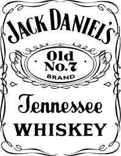

Jack Daniels

9.9

- Categoria
- Whisky
- Quem Somos
- Mais de 150 anos se passaram desde que Nearest e Jack começaram a fazer whisky juntos e, até hoje, sempre houve um membro da família Green trabalhando ns Destilaria Jack Daniel.
- Horários
- Funciona de segunda à segunda, de 00h às 23h.